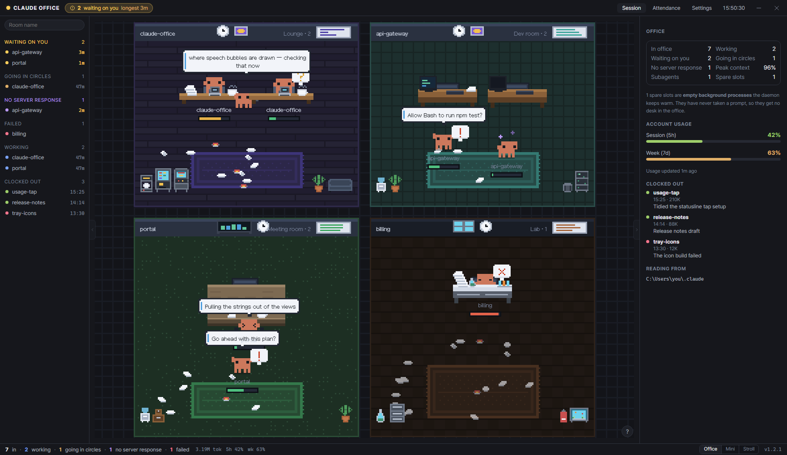

상단바 · 왼쪽 세션 목록 · 오른쪽 패널을 형제 앱(whennote·whenwork·whencalendar·whenmusic·whencommand)의
토큰으로 다시 입히고, OS 제목 표시줄을 걷어 헤더가 드래그 바가 되는 안이다. 사무실(캔버스)은 그대로다 —
세 안 모두 바닥 바탕색만 --bg-inset으로 맞춘다. 셋은 헤더에 무엇을 두는가로 갈린다.
이 앱이 팔레트에 더하는 토큰은 --wait 한 쌍뿐이다(아래 §0).
no-drag.
renderer/style.css의 :root는 리터럴 hex가 정의부 밖에 없도록 돼 있어 정의부만 갈아 끼우면 껍데기 전체가 따라온다.
바탕 4단·선 3단·글자 4단이 형제 앱의 4·1·3단으로 접힌다. 뜻이 있는 색은 아래처럼 대응한다.
| 뜻 | 지금 | 형제 앱 | 비고 |
|---|---|---|---|
| 창 바닥 / 열 바탕 | --s0 #0b0d12 · --s1 | --bg-inset · --bg-app | 사무실이 들어앉는 무대만 한 겹 가라앉힌다(inset). 열과 헤더는 app |
| 떠 있는 것 / 눌린 것 | --s2 · --s3 | --bg-raised · --bg-hover | 카드·버튼은 raised, hover·켜짐은 hover |
| 선 | --b0 --b1 --b2 3단 | --border 1단 + --border-focus | 가장 잦은 b1이 border로. b0(줄 사이)는 선 대신 여백으로 가른다 |
| 글자 | --t1 --t2 --t3 --t4 | --text-primary / secondary / muted | t3·t4가 muted 하나로 접힌다 — t4는 쓰는 곳이 적어 잃는 것이 없다 |
| 나를 기다린다 | --acc #ffcf5c | --wait #ffcf5c (이 앱이 더하는 토큰) | 형제 팔레트의 노랑(--warning #e0af68)은 톤이 가라앉아 "유일한 신호" 역할이 약하다. whenmusic이 --music을 더한 것과 같은 자리 |
| 작업 중 · 초점 · 선택 | --work #58a6e0 | --accent #7aa2f7 | 고른 행의 띠도 accent로 바꾼다 — 지금은 노랑이라 대기 신호와 같은 색이다 |
| 끝남 · 주 동작(터미널 열기) | --done #4fbf7f | --success #9ece6a | --go-* 셋은 success의 dim 변형으로 접는다 |
| 헤매는 중 · 게이지 60% | --stuck · --warn | --warning #e0af68 | 둘이 하나로. 노랑 계열이 셋(acc·stuck·warn)에서 둘(wait·warning)로 준다 |
| 실패 · 게이지 85% | --fail #e2624a | --danger #f7768e | 닫기 버튼 hover도 이 색(형제 앱과 같음) |
| 서버 응답 없음 | --broken #b9a1f0 | #bb9af7 (whenwork --ai · whencalendar --cal-3) | 캔버스의 도는 별(sprites.mjs dizzy #b9a1f0)과 같은 값이어야 한다 — 별 색도 함께 맞춘다 |
| 모서리 | 2 / 4 / 8px | 6 / 10 / 14 / 16px | 버튼·입력칸 6, 카드 10, 창 자체는 OS가 깎는다(roundedCorners) |
| 글자 크기 | 11 / 12 / 13 / 16 / 22 | 12 / 13 / 14 / 16 | 본문 13→14는 패널 폭(330)에서 줄바꿈이 늘어난다 — 패널만 13을 유지할지 §5에서 결정 |
정보구조는 손대지 않는다. 헤더 왼쪽에 형제 앱식 워드마크(점 + 대문자), 오른쪽 끝에 최소화·닫기가 들어오고, 기존 아이콘 버튼 넷(목록·패널 접기, 미니, 산책)은 그 왼쪽에 그대로 선다. 회귀 위험이 가장 낮고 하루면 끝난다.

?
좋은 점 — 설정(view.railOpen·panelOpen·roomSlots)과 JS가 잡는 선택자가 하나도 안 바뀐다. :root 정의부 교체 + 헤더 끝에 버튼 둘 + frame:false가 전부다.
아쉬운 점 — 헤더 오른쪽에 아이콘 버튼 여섯이 줄지어 서서, 지금도 "좁은 창에서 먼저 밀리는 자리"였던 곳이 더 붐빈다. 아이콘 넷은 여전히 글자 없이 생김새로만 구분된다.
헤더는 "지금 사무실이 어떤가"만 말한다. 워드마크의 점이 전체 상태등이 되고(대기 있으면 노랑), 상태 다섯이 누를 수 있는 칩으로 선다 —
누르면 목록과 캔버스가 그 상태만 남긴다(거르기 칸과 같은 길, 새 기능). 미니·산책은 아이콘 둘 대신 모드 전환기 하나다(설정의 mode가 이미 배타다).
토큰 총량·계정 사용률은 헤더를 떠나 세션 목록 바닥에 작은 게이지로 내려간다 — 패널이 설정 탭에 가 있어도 늘 보인다.
열 접기는 각 열 가장자리의 손잡이가 맡아 헤더에서 빠진다.
좋은 점 — 헤더가 이 앱의 존재 이유(대기)와 상태만 말한다. 아이콘 넷이 사라지고 글자 있는 컨트롤 하나(모드)만 남아 좁은 창에서도 읽힌다. 칩이 곧 거르기라 "실패한 것만 보자"가 한 번 누르기다.
계정 사용량은 목록 바닥에 상주하니 패널 세션 판의 계정 사용량 블록은 뺄 수 있다(세션 판이 그만큼 짧아진다).
치를 값 — 상태 칩 거르기는 새 기능이라 roomsToDraw에 상태 조건이 하나 더 들어간다(목록과 캔버스가 같은 것을 보는 규칙은 그대로). 열 접기 손잡이는 캔버스 위에 떠서 #stage의 absolute 배치에 둘이 더 얹힌다.
헤더 44px — 지금 42px에서 2px 는다(칩 높이).
whencalendar·whenwork와 같은 헤더 문법이다: 워드마크 → 탭 → (오른쪽) 시각 → 창 버튼. 세션·출근부·설정 탭이 패널 안에서 헤더로 올라오고 패널은 내용만 남는다. 상태 수치 다섯은 왼쪽 목록의 묶음 머리가 이미 세고 있으니 헤더에서 뺀다(대기 칩만 남긴다). 토큰·사용률·모드·버전은 26px 하단 상태줄로 내려간다.
좋은 점 — 트레이에 나란히 사는 형제 앱과 헤더가 같은 문법이라 한 사람의 앱으로 읽힌다. 헤더 36px로 가장 얇다. 패널 탭이 헤더에 있으니 패널을 접어 둔 채로도 탭이 보인다(지금은 접으면 탭도 사라져 자리 클릭만이 패널을 여는 길이다).
치를 값 — 상태 다섯이 헤더에서 사라져 목록을 접으면 "작업 중 2 · 실패 1"을 볼 곳이 없다(대기만 남는다). 탭이 패널 밖에 있어 "탭이 두 판으로 가는 유일한 문" 규칙(#135)은 지키지만, 탭과 그것이 바꾸는 판이 떨어져 선다. 하단 상태줄은 창 높이 26px를 먹는다 — 미니 모드엔 못 둔다.
어느 안을 고르든 함께 간다. 각각은 작지만 "쓰기 편하다"의 대부분이 여기서 온다.
OS 닫기 버튼이 하던 일(hide → 트레이)을 그대로 잇는다. 툴팁은 형제 앱 문구 그대로 "닫기 (트레이에 남습니다)". 토스트는 첫 닫기에만 — 설정에 seenTrayHint 하나.
맥은 frame:false 대신 titleBarStyle:'hidden' + trafficLightPosition으로 신호등을 남기고 헤더 왼쪽에 76px을 비운다(body.mac). 우리 최소화·닫기 버튼은 맥에서 숨긴다 — 같은 일을 하는 버튼이 양끝에 둘 서면 안 된다. 창을 둥글게 깎는 것도 OS(roundedCorners).
이 앱에서 가장 잦은 동작은 "기다리는 세션의 터미널로 가기"인데 지금은 행 클릭 → 패널 바닥 버튼의 두 번이다. hover한 행에 터미널 열기가 떠서 한 번이 된다. 고른 행의 띠는 노랑에서 파랑으로 — 노랑은 대기에만.
단축키 힌트는 거르기 칸 끝의 /처럼 그 컨트롤 안에 적는다. 전역 단축키(Ctrl+Alt+O…)는 그대로다.
지금 문구(topbar.allHidden)에 왜 비었는지(거르기 값·접힌 수)와 푸는 버튼을 붙인다. 걸러진 개수 배지(#room-shown)는 ㉡에서는 "출근 7" 칩이, ㉢에서는 목록 머리가 대신한다.
위는 지금처럼 밑줄(색만 accent로), 아래는 형제 앱의 알약 탭. 패널 안에는 하위 탭(설정의 일반·알림·방·단축키)이 또 있어 두 층이 다른 모양이어야 한다 — 위 밑줄 + 아래 알약을 추천. ㉢는 탭이 헤더로 가므로 헤더가 알약, 패널 안 하위 탭도 알약이 되어 한 층만 남는다.
| ㉠ 최소 이식 | ㉡ 헤더 재편 | ㉢ 형제 앱 헤더 | |
|---|---|---|---|
| 대기 신호가 먼저 읽힘 | 지금과 같음 | 점 + 칩, 가장 강함 | 칩 하나뿐이라 오히려 또렷 |
| 목록 접은 채로 상태 다섯 보기 | 헤더에 남음 | 칩으로 남음 | 못 봄(대기만) |
| 좁은 창(560px)에서 헤더 | 버튼 여섯이 먼저 밀림 | 칩이 줄어 "출근 7"만 남게 접어야 함 | 가장 얇고 적음 |
| 형제 앱과의 닮음 | 토큰만 | 토큰 + 워드마크 | 헤더 문법까지 |
| 새 기능 | 없음 | 상태 칩 거르기 · 행 바로가기 · 모드 전환기 | 헤더 탭 · 하단 상태줄 |
| 건드리는 곳 | style.css :root · index.html 헤더 · main 창 옵션 | + app.mjs 거르기(roomsToDraw) · 목록 바닥 · 접기 손잡이 | + 패널 탭 이동(applyPanelTab이 보는 DOM) · 상태줄 · 미니 모드 예외 |
| 대략 작업량 | 1일 | 3일 | 3일 |
| 회귀 위험 | 낮음 | 중간 — 거르기 축이 하나 는다 | 중간 — 패널 탭 DOM이 옮겨 간다 |
--wait #ffcf5c를 더한다(whenmusic의 --music처럼) vs 형제 팔레트의 --warning #e0af68을 그대로 대기에 쓴다. 후자는 팔레트가 완전히 같아지지만 "헤매는 중"과 색이 겹쳐 둘 중 하나가 색을 잃는다. 캔버스의 선택 테두리(COLORS.sel)와 대기 ❗도 같은 노랑이라 전자가 캔버스와도 이어진다.--fs-md만 13으로 둔다(토큰 이름은 같고 값만 다른 유일한 자리로 주석에 남긴다) vs 전부 14로 올리고 패널을 350px로 넓힌다.